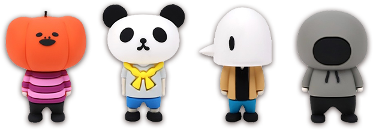
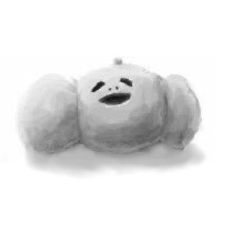
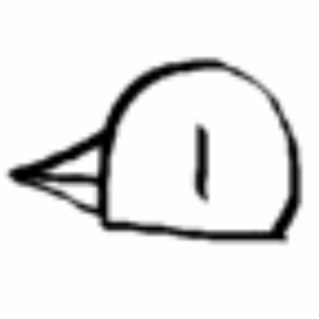
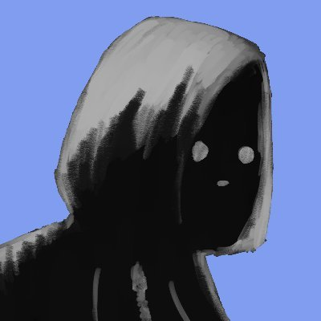

ナポリの男たちについて
ゲーム実況者「ジャック・オ・蘭たん」「hacchi」「すぎる」「shu3」の4人によるゲーム実況グループです。
グループ名は「ナポリの男たち」。
グループ名はメンバーが発案した大量の候補の内の一つである。2016年6月10日に配信したニコ生の視聴者アンケートで決定した。略称はナポ男。 メンバー各々の活動とは別に、主に企画動画を投稿していく予定とのこと。 グループの方針としては、「介護疲れに効く動画」を作っていきたいとニコ生にて語っている。
2017年3月1日にニコニコユーザーチャンネル「ナポリの男たちch」が開設された。

リーダー。イメージカラーは紫。
メンバー最年少だが、ゲーム実況プレイヤーの中で最古参の1人。通称「実況界の三葉虫」。
ナポリでも個人実況と同じく自由奔放な奇才ぶりを発揮。
トーク、企画立案などでメンバーを牽引する一方、謎キャラ怪演、乱高下するテンション、暴言や際どい話題のブッコミでメンバーを振り回す。
イメージカラーは黄色。
自称「西の天才実況者」。
個人実況で「詰みのプロ」と称された才能はナポリでも健在。特に運転が苦手で、多くはない車両登場シーンにおいて好調に廃車を生産し、無免許の貫禄を見せている。
メンバー最年長とは思えない少年み溢れる言動の中に、時折サイコパス疑惑を持たれる異様な情動が垣間見えるのが持ち味。

イメージカラーは緑。
亀戸組の一員でもある。
ナポリでは、主に白いタートルネックニットを着た黒髪センター分けの姿で表現される。
個人実況での根気強いゲームプレイと鋭いツッコミは、ナポリでも遺憾無く発揮されている。
結成当初は毒舌ツッコミのしっかり者というイメージがあったが、日が経つ毎にしょーもなさと情緒不安定さが露呈し親しみやすくなっている。

イメージカラーは青。
個人ではMinecraftのMOD開発や、やべーやりこみの実況プレイで知られている。
その技術力と精神力で、ナポリでも技術担当のやべー奴として活躍している。
結成当初は物腰柔らかで笑い上戸な敬語キャラだったが、下ネタ・慇懃無礼・仲間を見捨てる等様々なキャラ付けが発掘され続けている可能性の獣。
引用：ピクシブ百科事典より